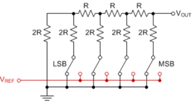
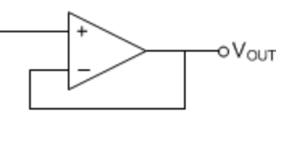
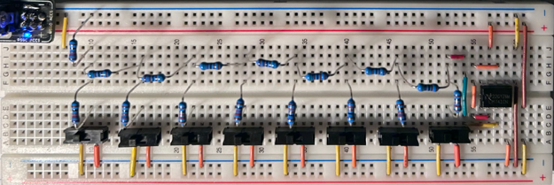
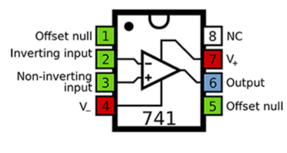
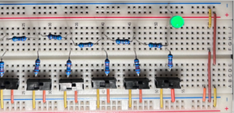
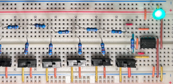

2023 · Analog + Digital Conversion
Digital to Analog Conversion
Built an 8-bit R/2R resistor ladder that converts binary switch inputs into an analog voltage. The project also used an op-amp voltage follower to buffer the output and make the signal more usable.

Video Demonstration
Working demonstration
The project video shows the physical build, behaviour, and final result.
 ▶ Watch on YouTube
▶ Watch on YouTube
Project Overview
Convert binary switch states into a proportional analog voltage.
The key challenge was understanding how each binary input contributes a different fraction of the output voltage while keeping the output strong enough to drive an indicator.
What I built
- 8-bit switch-controlled resistor ladder
- Op-amp voltage follower stage
- Breadboard prototype with output indicator
- Comparison of buffered vs unbuffered output current
Technical Skills
Skills demonstrated
Digital-to-analog conversion
Applied directly in the design, build, debugging, or final integration of the project.
Resistor networks
Applied directly in the design, build, debugging, or final integration of the project.
Op-amp buffering
Applied directly in the design, build, debugging, or final integration of the project.
Analog measurement
Applied directly in the design, build, debugging, or final integration of the project.
Build Story
R/2R ladder, buffer, and output comparison
R/2R ladder graphic
The image to the right shows the voltage follower stage, where the op-amp reads the ladder voltage and reproduces it with a stronger current source.

Voltage follower
The image to the right shows the 8-bit R/2R ladder breadboard prototype with switch inputs and an op-amp output stage.

Output comparison
The image to the right shows the LM741 pinout used to wire the operational amplifier as the voltage follower.

Bit weighting table
The image to the right shows the ladder output without the voltage follower stage, where the LED is driven by a much weaker current.

Op-amp pinout
The image to the right shows the ladder output with the voltage follower stage added, allowing the same voltage relationship to drive the LED more effectively.
